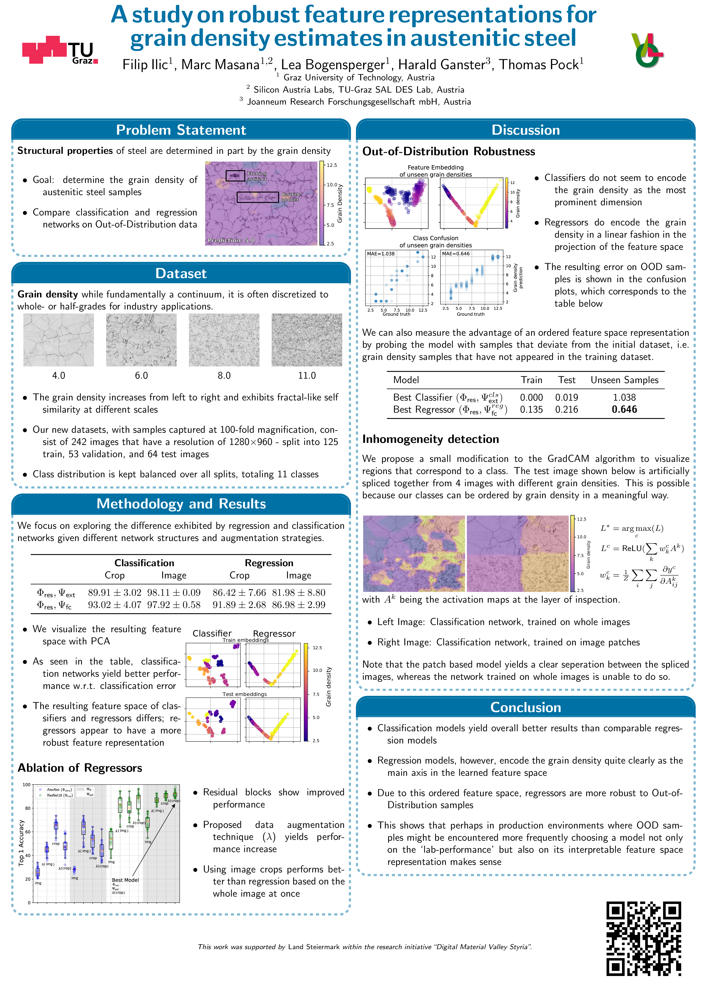

A study on robust feature representations for grain density estimates in austenitic steel2021 Computer Vision and Pattern Analysis Across Domains |

Cite
@inproceedings{ilic21oagm,
title={A study on robust feature representations for grain density estimates in austenitic steel},
author={Ilic, Filip and Masana, Marc and Bogensperger, Lea and Ganster, Harald and Pock, Thomas},
booktitle={Proc. Workshop of the Austrian Association for Pattern Recognition (AAPR/OAGM)},
year={2021}
}
Further Reading
|
Physicalization
|